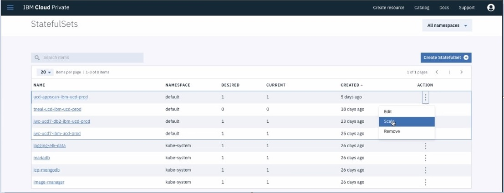
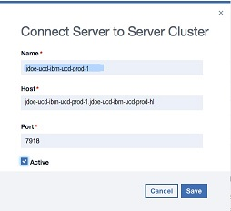
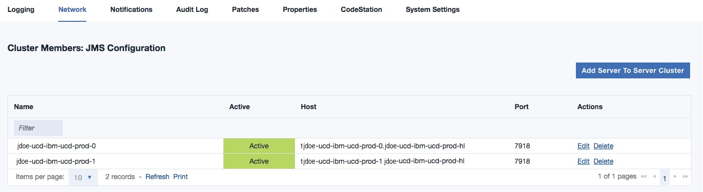

Scaling the server in a Kubernetes cluster
Scaling the HCL® UrbanCode™ Deploy server may become necessary when the demand for system resources changes. For example, when server requests increase in a high-availability cluster in a container, you can add another UrbanCode Deploy server instance to the server cluster.
Log in to the IBM Cloud Private cluster where your UrbanCode Deploy server container is running.
The number of HCL UrbanCode Deploy server instances/replicas can be increased or decreased using the IBM Cloud® Private (ICP) user interface or the kubectl command line client. Then, the number of server instances must be manually added or removed from the UCD server Network page.
- At your IBM Cloud Private dashboard, select Workloads > Statefulsets and click the Action ellipsis for the statefulset associated with your Helm release. The name of your statefulset will be <ReleaseName>-ibm-ucd-prod, where <ReleaseName"> is the Helm release name you specified when you installed your HCL UrbanCode Deploy server.
- At the Action menu, click Scale. 
- At the Scale screen, specify the number of instances/replicas you want and click Scale Statefulset.
-
Manually add (scale up) or remove (scale down) JMS Cluster Member entries, as required, from the Network settings for the UrbanCode Deploy server.
Note: WebSocket Secure (WSS) entries are automatically added to the cluster members.
Scaling up: adding JMS cluster member entries
In the UrbanCode Deploy server user interface, go to Settings > System Settings >Network.
Add information for each server instance you are running. Click Add Server To Server Cluster and provide the following at the Connect Server to Server Cluster dialog.

UrbanCode Deploy Server Instance Parameter Value Name Enter the Kubernetes pod name for the UrbanCode Deploy server instance. The pod name will be <ReleaseName>-ibm-ucd-prod-N, where <ReleaseName> is the Helm release name you specified when you installed your UrbanCode Deploy server and N is the server instance number (0-based). Host Enter <PodName><HeadlessServiceName>, where <PodName> is the same value entered for Name and <HeadlessServiceName> is <ReleaseName>-ibm-ucd-prod-hl. Port The JMS port (default port is 7918). When all the information is complete, the Cluster Members: JMS Configuration page is displayed with the updated clusters.

Scaling down: removing JMS cluster member entries
In the UrbanCode Deploy server user interface, go to Settings > System Settings >Network.
Delete each UrbanCode Deploy server instance that is no longer running.
Type Instruction JMS Configuration In the JMS Configuration section of the Network page, click Delete in the Actions column of each UCD server/instance you scaled down. For example, if you scaled down from 3 UCD server instances to 1 instance, you would delete the JMS Cluster Member entries for <ReleaseName>-ibm-ucd-prod-2 and <ReleaseName>-ibm-ucd-prod-1. WebSocket Configuration In the WebSocket Configuration section of the Network page, hover over each line that corresponds to the UCD server instances you scaled down. Click the ellipsis to the right of the Server Id and select Delete. You can use the value in the Host field to determine which WebSocket Configuration entries to delete.
Each UrbanCode Deploy server instance that remains in the server cluster will write a message to its log file, periodically reporting a failure to connect to the UrbanCode Deploy server instances that were removed from the cluster. These messages will continue until each running server has been restarted.
You can restart an UrbanCode Deploy server instance by stopping the pod where the server is running, or by stopping the server itself from within the pod. In both cases, the pod will be restarted, which will restart the UrbanCode Deploy server. To stop the pod, use the kubectl command line client with the following command, where N is the server instance number.
kubectl delete pod <ReleaseName>-ibm-ucd-prod-N
You can also stop and restart the UrbanCode Deploy server by pushing a shell into the pod and running the server stop command.
kubectl exec -it <ReleaseName>-ibm-ucd-prod-N bash
root@<ReleaseName>-ibm-ucd-prod-N:# cd/opt/ibm-ucd/server
root@<ReleaseName>-ibm-ucd-prod-N:# bin/server stop
root@<ReleaseName>-ibm-ucd-prod-N:#
When the UCD server process terminates, the pod will stop and be restarted, also restarting the UrbanCode Deploy server instance.
Parent topic: Installing the server in a Kubernetes cluster